건설재료시험산업기사 (2005-03-06 기출문제)
1과목: 콘크리트공학
1. 고강도 콘크리트의 설계기준강도는 일반콘크리트에서 최소 몇 MPa이상으로 하는가?
- 30
- 35
- 40
- 45
(정답률: 알수없음)

2. 해양 환경하에 있는 콘크리트 구조물의 염해에 의한 강재부식을 방지하기 위한 대책 중 틀린 것은?
- 콘크리트의 피복두께를 증가시킨다.
- 콘크리트 중의 염소이온량을 작게 한다.
- 수지도장 철근을 사용하거나 콘크리트 표면에 라이닝을 한다.
- 물-시멘트비를 가능한 작게 하고 고로슬래그 미분말 등의 포졸란 재료의 사용은 피한다.
(정답률: 알수없음)
3. 콘크리트의 배합설계 시 유의사항으로 잘못된 것은?
- 운반, 타설, 다짐작업이 가능한 범위에서 될 수 있는 한 슬럼프가 작게한다.
- 경제적인 관점에서 가능한 한 최대치수가 작은 굵은골재를 사용한다.
- 기상작용, 화학작용 등에 충분히 저항할 수 있는 내구성을 가져야 한다.
- 소요의 강도를 확보할 수 있도록 물-시멘트비를 정해야 한다.
(정답률: 알수없음)
4. 다음 중 조강 포틀랜드 시멘트를 이용하는 콘크리트로 적절한 것은?
- 유동화 콘크리트
- 매스 콘크리트
- 수밀 콘크리트
- 한중 콘크리트
(정답률: 알수없음)
5. 콘크리트의 치기와 이음에 관한 설명 중 틀린 것은?
- 벽 또는 기둥에 콘크리트를 연속하여 치는 경우는 콘크리트의 치기속도가 너무 빠르지 않도록 한다.
- 기둥과 보가 연속되어 있는 경우는 전체의 콘크리트를 동시에 치는 것이 좋다.
- 콘크리트가 굳기 전에 침하균열이 발생한 경우는 즉시 탬핑을 하여 균열을 제거해야 한다.
- 시공이음은 전단력이 작은 위치에 설치하는 것이 좋다.
(정답률: 알수없음)
6. 다음 혼화재료 중 콘크리트의 워커빌리티를 개선하는 효과가 없는 것은?
- 시멘트 분산제
- 급결제
- 유동화제
- AE제
(정답률: 알수없음)
7. 평탄한 운반로를 만들어 콘크리트의 재료분리를 방지할 수 있는 경우에는 운반거리가 최대 얼마 이하까지 손수레를 사용할 수 있는가?
- 100m
- 150m
- 200m
- 400m
(정답률: 알수없음)
8. 콘크리트에 초기 프리스트레스힘 Pi = 6.5kN를 도입한 후 여러원인에 의하여 1.5kN의 프리스트레스힘이 손실되었을 때의 유효율은?
- 70%
- 75%
- 77%
- 80%
(정답률: 알수없음)
9. 일반 콘크리트의 양생에 대한 설명으로 잘못된 것은?
- 콘크리트는 친 후 경화를 시작할 때까지 직사광선이나 바람에 의해 수분이 증발하지 않도록 보호해야한다.
- 콘크리트를 친 후 습윤상태의 보호기간은 보통포틀랜드시멘트를 사용한 경우는 3일간 이상을 표준으로 한다.
- 거푸집판이 건조할 염려가 있을 경우는 살수를 하여 습윤상태를 유지해야한다.
- 막양생을 할 경우에는 충분한 양의 막양생제를 적절한 시기에 균일하게 살포해야 한다.
(정답률: 90%)
10. 한중 콘크리트에 관한 설명으로 틀린 것은?
- 한중 콘크리트의 시공방법은 기온, 구조물의 종류 및 크기 등에 따라 다르지만 일반적으로 4℃이하의 기온에서는 한중콘크리트로서 시공한다.
- 한중콘크리트에는 AE콘크리트를 사용하는 것을 원칙으로 한다.
- 가열한 재료를 믹싱할 때에는 먼저 시멘트, 굵은 골재, 잔골재를 넣어서 건비빔한 다음 물을 넣는 것이 좋다.
- 응결, 경화 초기에 동결하지 않도록 양생에 주의하여야 한다.
(정답률: 알수없음)
11. 수중 콘크리트 시공시 주의사항으로 잘못 설명된 것은?
- 일반 수중콘크리트의 물-시멘트비는 50% 이하로 한다.
- 일반 수중콘크리트의 단위시멘트량은 370 kg/m3 이상으로 한다.
- 유수 중에 시공할 때는 유속이 3 m/sec 이하이어야 한다.
- 콘크리트를 수중에 낙하시키면 재료분리가 발생하고 시멘트가 유실되기 때문에 수중에 낙하시켜서는 안된다.
(정답률: 75%)
12. 콘크리트 강도에 영향을 미치는 요인에 대한 설명 중 틀린 것은?
- 부배합의 콘크리트에서 물-시멘트비가 동일하면 굵은 골재의 최대치수가 클수록 압축강도는 감소한다.
- 염분을 함유한 해사를 사용한 콘크리트의 조기강도는 다소 증가하지만 장기강도는 감소한다.
- 강도시험을 할 때 재하속도가 빠르면 콘크리트의 압축강도는 크게 나타난다.
- 고강도 콘크리트에서는 골재의 강도가 콘크리트의 압축강도에 미치는 영향이 작다.
(정답률: 82%)
13. 다음의 배합조건에서 잔골재율은 얼마인가? (단, 잔골재의 용적 : 290L, 굵은골재의 용적 : 510L)
- 10.75%
- 25.35%
- 36.25%
- 55.85%
(정답률: 알수없음)
14. 블리딩에 의하여 콘크리트 표면에 떠올라와 침전한 미세한 물질을 무엇이라고 하는가?
- 타르
- 모르터
- 레이탄스
- 실리카흄
(정답률: 알수없음)
15. 콘크리트용 재료에 염화물이 많이 함유되면 구조물에 주로 어떤 현상이 발생하는가?
- 일정 응력이 장시간 작용하면 소성적 변형이 급격히 증가한다.
- 철근과 콘크리트 사이에 수막이 형성되어 부착강도가 향상된다.
- 거푸집과 콘크리트 사이에 압력이 증가되어 양생이 지연된다.
- 콘크리트 속의 강재 부식이 촉진되어 구조물이 조기에 열화한다.
(정답률: 알수없음)
16. 콘크리트의 배합설계에서 단위수량이 156㎏/m3, 단위 시멘트량이 300㎏/m3일 때 물-시멘트비는?
- 52%
- 54%
- 56%
- 58%
(정답률: 알수없음)
17. 콘크리트의 탄성 및 소성에 대한 설명 중 틀린 것은?
- 콘크리트는 후크의 법칙(Hooke,s Low)이 성립되지 않는 비선형재료이다.
- 콘크리트의 정탄성계수는 일반적으로 할선탄성계수로 나타낸다.
- 경량콘크리트의 탄성계수는 보통콘크리트의 탄성계수보다 작다.
- 콘크리트의 탄성계수는 동일한 품질의 콘크리트일 경우 재령에 상관없이 일정하다.
(정답률: 알수없음)
18. 굳지 않은 콘크리트의 슬럼프 시험에 대한 설명으로 잘못된 것은?
- 콘크리트 중에 크기가 40mm 이상인 굵은골재가 상당량 함유된 경우는 이 시험을 적용시킬 수 없다.
- 슬럼프 콘은 밑면 내경이 20 cm, 윗면 내경이 10 cm, 높이가 30 cm 이다.
- 슬럼프 콘을 벗기는 작업은 1초내에 신속히 들어 올려야 한다.
- 슬럼프 콘에 콘크리트를 채우기 시작해서 벗길 때까지 전작업을 중단함이 없이 3분 이내로 끝마쳐야 한다.
(정답률: 알수없음)
19. 콘크리트를 구조물의 재료로 사용하는 이유에 대한 설명 중 옳지 않은 것은?
- 임의의 강도를 갖는 구조물 제작이 가능하다.
- 다른 구조재료와 비교하여 제조와 시공이 쉽고 숙련공을 많이 필요로 하지 않다.
- 역학적 결점은 다른 재료를 사용하여 쉽게 보강할 수 있다.
- 구조물의 개조 및 철거가 용이하고 유지관리비가 적게 들며 품질관리가 쉽다.
(정답률: 알수없음)
20. 그림과 같이 지름이 d, 길이가 L 인 원주형공시체에 쪼갬인장강도시험을 하여 최대하중 P를 얻었다. 이 때 쪼갬인장강도를 구하는 공식은?
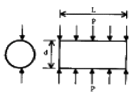
- P / AdL
- P / 2AdL
- 2P / AdL
- 2P / Ad2L
(정답률: 알수없음)
2과목: 건설재료 및 시험
21. 콘크리트용 굵은골재의 품질시험(안전성 시험)에 있어서 황산나트륨을 사용할 경우 손실질량 백분율의 한도는 최대 몇 % 이하로 하는가?
- 12% 이하
- 14% 이하
- 16% 이하
- 18% 이하
(정답률: 알수없음)
22. 교통하중 등에 의해서 발생하는 아스팔트의 유동성 변형정도를 알아보기 위한 시험은?
- 아스팔트 신도시험
- 아스팔트 비중시험
- 아스팔트 침입도시험
- 아스팔트 안정도시험
(정답률: 알수없음)
23. Hooke의 법칙에 대한 설명으로 잘못된 것은?
- 응력은 변형률에 비례한다.
- 응력은 탄성계수에 비례한다.
- 변형률은 탄성계수에 반비례한다.
- 변형률은 단면적에 비례한다.
(정답률: 알수없음)
24. 시멘트 모르타르의 압축강도 결정에 있어서 시험시 평균값보다 최소 몇 % 이상 강도차가 있는 공시체는 계산에 넣지 않는가?
- 10%?
- 15%?
- 20%?
- 30%
(정답률: 알수없음)
25. 포졸란(pozzolan)을 사용한 콘크리트의 특징으로 잘못된 것은?
- 강도의 증진이 빠르며 특히 압축강도가 현저하게 증가한다.
- 내구성, 수밀성 및 해수에 대한 화학적 저항성이 크다.
- 블리딩이 감소한다.
- 워커빌리티(workability)를 개선시키며 재료분리가 작아진다.
(정답률: 알수없음)
26. 건설공사 품질시험기준 중 수공구조물공사에서 호안용 블럭의 압축강도 시험은 몇매마다 현품으로 시험해야 하는가?
- 3000매
- 4000매
- 5000매
- 6000매
(정답률: 알수없음)
27. 건설공사 품질시험기준 중 도로건설용 흙의 시험종목에 포함되지 않는 시험은?
- 실내 CBR시험
- 직접전단시험
- 비중시험
- 다짐시험
(정답률: 알수없음)
28. 아스팔트 혼합물을 배합 설계할 때 필요치 않은 사항은?
- 침입도와 흐름값의 측정
- 골재의 입도 측정
- 응결시간의 측정
- 마아샬(marshall)안정도 시험
(정답률: 50%)
29. 다음 중 석유 아스팔트가 아닌 것은?
- 스트레이트 아스팔트
- 그라하마이트
- 블라운 아스팔트
- 용제추출 아스팔트
(정답률: 알수없음)
30. 시멘트의 응결시간에 대한 설명이다. 다음 사항중에서 옳은 것은?
- 분말도가 낮으면 응결이 빠르다.
- 물의 양이 많으면 응결이 빨라진다.
- 알루민산 3석회(C3A)가 많으면 응결이 빠르다.
- 온도가 낮을수록 응결이 빨라진다.
(정답률: 알수없음)
31. 다음은 고분자화합물에 대한 설명이다. 틀린 것은?
- 고분자화합물은 유기질만을 의미한다.
- 분자량이 약 10,000이상의 화합물을 말한다.
- 천연고분자 화합물과 합성고분자화합물로 구분할 수 있다.
- 토목재료로 주로 사용되는 고분자화합물은 합성수지이다.
(정답률: 알수없음)
32. 아스팔트의 침입도를 시험하는 목적은 무엇인가?
- 반죽질기(콘시스턴시)를 측정하기 위하여
- 연성을 조사하기 위하여
- 응결시간을 측정하기 위하여
- 연화점을 측정하기 위하여
(정답률: 50%)
33. 혼화제인 감수제의 사용효과 중 옳지 않은 것은?
- 시멘트풀의 유동성을 감소시킨다.
- 워커빌리티를 좋게할 수 있다.
- 단위 수량을 감소시킨다.
- 수화작용을 촉진시킬 수 있다.
(정답률: 알수없음)
34. 시멘트의 비중에 관한 다음 사항 중 옳지 않은 것은?
- 비중시험은 르샤틀리에 비중병으로 하며 시멘트의 시험표준량은 64g이다.
- 일반적으로 풍화된 시멘트는 비중이 증가된다.
- 비중은 일반적으로 석회나 알루미나 성분이 많으면 작아지고 실리카나 산화철이 많아지면 커진다.
- 보통 포틀랜드 시멘트의 평균 비중은 3.15정도이다.
(정답률: 알수없음)
35. 골재에서 조립율이 크다는 것은 다음 중 어느 것을 의미하는가?
- 골재가 단단하고 내구적이다.
- 골재의 입도가 우수하다.
- 골재의 입자가 크다.
- 골재의 모양이 둥글고 시멘트 풀과의 부착성이 크다.
(정답률: 알수없음)
36. 다음 중에서 폭발력이 가장 강하고 수중에서도 폭발 할 수 있는 다이너마이트(dynamite)는 어느 것인가?
- 교질 다이너마이트
- 분상 다이너마이트
- 규조토 다이너마이트
- 스트레이트(straight)다이너마이트
(정답률: 알수없음)
37. 조립률이 2.7인 잔골재와 7.3인 굵은 골재를 1 : 1.5의 무게비로 섞을 때 혼합골재의 조립률은?
- 5.46
- 4.46
- 3.46
- 2.46
(정답률: 알수없음)
38. 철근을 굽힘 시험하는 목적은 무엇인가?
- 인장강도를 알기 위하여
- 가공시의 결함발생 유무를 알기 위하여
- 연신율을 구하기 위하여
- 단면수축률을 구하기 위하여
(정답률: 47%)
39. 다음 중에서 그라우트(grout)용 혼화제로서 필요한 성질에 해당하지 않는 것은?
- 재료의 분리가 일어나지 않아야 한다.
- 단위수량이 작고 블리딩이 작아야 한다.
- 주입이 쉬워야하며 공기를 연행시켜야 한다.
- 그라우트를 수축시키는 성질이 있어야 한다.
(정답률: 알수없음)
40. 굵은골재의 절건밀도가 2.66t/m3이고, 단위용적질량이 1.80 t/m3 일 때 이 골재의 공극률은?
- 27.6%
- 72.4%
- 32.3%
- 67.7%
(정답률: 알수없음)
3과목: 건설시공학
41. 굴착하는 본바닥의 토량이 같을 때 운반토량이 가장 많아지는 것은?
- 모래
- 경암
- 조약돌 섞인 모래
- 점질토
(정답률: 알수없음)
42. 그래브 준설선(Grab Dredger)에 대한 다음 설명 중 옳지 않은 것은?
- 대선위에 크램셀의 일종을 달아 수중굴착을 한다.
- 대규모의 준설에 적합하다.
- 기계가 간단하고 건조비가 싸다.
- 준설깊이의 조절이 비교적 용이하다.
(정답률: 알수없음)
43. 터널의 보강을 위한 숏크리트(Shotcrete)에서 건식법의 특징으로 틀린 것은?
- 분진 발생량이 많다.
- 리바운드(Rebound)량이 적다.
- 운반거리를 습식법 보다 길게할 수 있다.
- 작업원의 숙련도에 따라 품질변동이 심하다.
(정답률: 알수없음)
44. 깊이 40m의 토층에서 표준관입시험을 한 결과 N=35였다. 로드길이와 토질에 의한 수정 N 값은?
- 16
- 18
- 22
- 35
(정답률: 알수없음)
45. 다음 발파법 중에서 심빼기 발파가 아닌 것은?
- V 컷
- 벤치컷
- 번컷(burn cut)
- 노컷
(정답률: 알수없음)
46. 옹벽 자체의 자중으로 토압에 저항하도록 3∼4m 높이로 만들어진 옹벽은?
- 중력식옹벽
- 반중력식옹벽
- 부벽식옹벽
- 역T형옹벽
(정답률: 알수없음)
47. 기성 철근콘크리트말뚝의 장점이 아닌 것은?
- 강도가 커 지지말뚝에 적합하고 습지대에서도 사용할 수 있다.
- 거리가 멀어도 운반이 쉬우며 지질이 고르지 않아도 현장에서 쉽게 잘라 쓸 수 있다.
- 건습에 썩지 않으므로 지하수위에 관계없이 시공이 가능하다.
- 재질이 균일하여 믿을 수 있다.
(정답률: 알수없음)
48. Heaving 현상 방지 대책으로서 잘못된 것은?
- 설계 계획을 변경한다.
- 흙막이 벽 배면 표토상에 중량물의 하중을 가한다.
- 흙막이의 근입깊이를 깊게 한다.
- 양질의 재료로 지반을 개량한다.
(정답률: 알수없음)
49. 교대구조물에서 교량의 일단을 지지하며 받침을 통하여 상부구조로 부터의 하중을 받는 부분의 명칭은 무엇인가?
- 구체
- 기초
- 흉벽
- 교좌
(정답률: 알수없음)
50. 다짐기계의 특성 중 관계가 없는 것이 조합된 것은?
- Macadam 로울러 - 전압식
- Tamping 로울러 - 충격식
- Rammer - 충격식
- Tandem 로울러 - 전압식
(정답률: 알수없음)
51. 콘크리트 포장과 비교할 때 아스팔트 포장의 특징으로서 잘못된 것은?
- 유지보수 및 부분적 보수가 용이하다.
- 판구조이고 가요성 포장이다.
- 교통개방 시기를 단축시킬 수 있다.
- 중차량에 대한 내구성이 부족하다.
(정답률: 알수없음)
52. 아스팔트 포장 중 실코트(seal coat)의 목적이 아닌 것은?
- 포장면의 수밀성 증대
- 포장면의 미끄럼저항 증대
- 포장면의 내구성 증대
- 포장면의 모관상승 차단
(정답률: 알수없음)
53. 불도우저의 1시간당 압토작업량을 Q2, 1개날의 리퍼작업량을 Q1 이라 하면 리퍼로 암석을 파쇄하면서 도저작업을 할 때의 1시간당 토공량 Q를 구하는 식으로 옳은 것은?
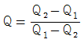
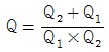
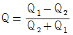
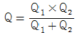
(정답률: 알수없음)
54. 건설기계에 대한 다음 설명 중 옳지 않은 것은?
- 쇼벨계 굴착기의 크기는 일반적으로 그 기본이 되는 버킷용량(m3)으로 표시한다.
- 모터그레이더의 크기는 일반적으로 Blade의 길이를 기준으로 표시한다.
- 아스팔트 플랜트의 크기는 일반적으로 믹서 자중으로 결정한다.
- 디젤 파일 해머의 크기는 일반적으로 Ram 중량으로 표시한다.
(정답률: 알수없음)
55. 토취장 선정에 있어서 고려하여야 할 사항 중 가장 관계가 먼 것은?
- 토질이 양호할 것
- 토량이 소요량에 만족할 것
- 성토개소에 향하여 상향구배로 1/30 이하일 것
- 싣기에 용이한 지형일 것
(정답률: 62%)
56. 어떤 공사를 실행하는데 있어서 필요한 시간을 추정하니 다음과 같았다. 기대 시간(te)은? (단, 낙관시간(to) : 10일, 정상시간(tm) : 15일, 비관시간(tp) : 26일)
- 10일
- 15일
- 16일
- 18일
(정답률: 알수없음)
57. 다음과 같은 공정표에서 주공정이 옳게 표기된 것은?
- 0-1-3-5-7
- 0-2-3-5-7
- 0-2-4-5-7
- 0-2-4-6-7
(정답률: 70%)
58. 철도, 수도, 도로 등의 횡단 기타 개착 공법이 곤란한 경우에 사용하는 것이며, 소구경의 강관을 입갱 사이에 삽입하거나 또는 당김으로써 토중에 관을 매설하는 이 공법은?
- NATM 공법
- 프론트 잭킹 공법
- 추진 공법
- 쉴드 공법
(정답률: 알수없음)
59. 관내의 집수효과를 크게하기 위하여 관둘레에 구멍을 뚫어 지하에 매설하는 일종의 집수암거로 하천의 복류수를 이용할 때 쓰면 편리한 것은?
- 관거
- 함거
- 다공관거
- 사이펀관거
(정답률: 알수없음)
60. 성토재료의 다지기와 최적 함수비의 관계에 대한 다음 설명 중에서 적당한 것은?
- 성토재료가 최적함수비에 가까울 때 전압하중을 크게하여 다지기 두께를 두껍게 하는 것이 좋다.
- 성토재료가 최적함수비 보다 습한 경우 전압하중을 증가하여 빨리 전압하면 소요의 다짐효과를 얻을 수 있다.
- 성토재료의 함수비가 최적함수비 보다 적을 때 살수를 함으로서 다짐의 효과를 개선할 수 있다.
- 최적함수비 상태로 신중히 다지면 성토의 투수계수를 최대로 할 수 있다.
(정답률: 알수없음)
4과목: 토질 및 기초
61. 포화단위 중량이 2.1g/㎝3인 사질토 지반에서 분사현상(quick sand)에 대한 한계 동수경사는?
- 0.9
- 1.1
- 1.6
- 2.1
(정답률: 알수없음)
62. 다음 중 느슨한 사질토 지반의 개량에 사용되는 공법이 아닌 것은?
- 진동다짐공법
- 폭파다짐공법
- 동압밀공법
- 플라스틱드레인공법
(정답률: 알수없음)
63. 다음 그림과 같은 다층지반에서 연직방향의 등가투수계수를 계산하면 몇 cm/sec인가?
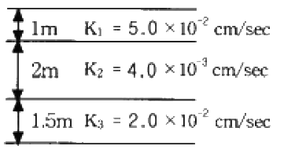
- 5.8×10-3
- 6.4×10-3
- 7.6×10-3
- 1.4×10-2
(정답률: 알수없음)
64. 도로를 축조하기 위하여 토취장에서 시료를 채취하여 함수비를 측정하였더니 10 % 였다. 이 흙의 다짐이 잘되지 않아 최적 함수비인 22 % 정도로 올리려고 한다. 1m3당 몇 ㎏ 의 물을 가해야 되는가? (단, 이 흙의 습윤밀도는 2.50 t/m3 이고, 간극비는 일정하다고 본다.)
- 168.2㎏
- 204.6㎏
- 272.8㎏
- 290.7㎏
(정답률: 알수없음)
65. 분할법에 의한 사면안정해석시에 제일 먼저 결정되어야 할 사항은?
- 분할세편의 중량
- 활동면상의 마찰력
- 가상활동면
- 각 세편의 공극수압
(정답률: 알수없음)
66. 점토지반에 제방을 쌓을 경우 초기 안정해석을 위한 흙의 전단강도를 측정하는 방법은?
- UU-test
- CU-test
 -test
-test- CD-test
(정답률: 알수없음)
67. 부피가 2,208cm3 이고 무게가 4000g 인 몰드속에 흙을 다져 넣어 무게를 측정하였더니 8294g 이었다. 이 몰드속에 있는 흙을 시료추출기를 사용하여 추출한 후 함수비를 측정하였더니 12.3% 였다. 이 흙의 건조 단위 중량은 얼마인가?
- 1.945 g/cm3
- 1.732 g/cm3
- 1.812 g/cm3
- 1.614 g/cm3
(정답률: 알수없음)
68. 10m×10m의 정방형 기초위에 q=5t/m2 의 등분포하중이 작용할 때 지표면아래 10m에서의 증가 유효 수직응력을 2 : 1분포법으로 구한 값은?
- 2.30 t/m2
- 1.25 t/m2
- 0.25 t/m2
- 1.80 t/m2
(정답률: 알수없음)
69. 노상토의 지지력의 크기를 나타내는 CBR 값의 단위는 무엇인가?
- kg/cm2
- kg·cm
- %
- kg/cm3
(정답률: 알수없음)
70. 어느 흙에 대하여 직접 전단시험을 하여 수직응력이 3.0㎏/㎝2일 때 2.0㎏/㎝2의 전단강도를 얻었다. 이 흙의 점착력이 1.0㎏/㎝2임을 알고 있다면 내부마찰각은 약 얼마인가?
- 13°
- 15°
- 18°
- 21°
(정답률: 알수없음)
71. 흙의 함수량을 어떤 양 이하로 줄여도 그 흙의 용적이 줄지 않고 함수량이 그 양 이상으로 늘면 용적이 증대하는 한계의 함수비로 표시된 것은?
- 액성한계
- 소성한계
- 수축한계
- 유동한계
(정답률: 알수없음)
72. 기초가 갖추어야 할 조건으로 거리가 먼 것은?
- 동결, 세굴 등에 안전하도록 최소의 근입깊이를 가져야 한다.
- 기초의 시공이 가능하고 침하량이 허용치를 넘지 않아야 한다.
- 상부로부터 오는 하중을 안전하게 지지하고 기초지반에 전달하여야 한다.
- 미관상 아름답고 주변에서 쉽게 구득할 수 있는 재료로 설계되어야 한다.
(정답률: 알수없음)
73. 콘크리트 벽체에 작용하는 Coulomb의 주동토압을 감소시키려고 할 경우 고려하여야 할 사항으로 틀린 것은?
- 뒷채움흙의 단위중량이 작을 것
- 뒷채움흙 표면의 경사가 작을 것
- 흙의 내부마찰각이 클 것
- 벽체와 흙의 마찰각이 작을 것
(정답률: 알수없음)
74. 무리말뚝의 효율(저감율)
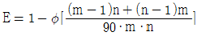
을 알면 무리말뚝 기초중의 말뚝 1개의 지지력은 어떻게 구하는가? (단, 말뚝의 지지력은 R이라고 한다)- Rg = R / E
- Rg = E / R
- Rg = R + E
- Rg = R · E
(정답률: 알수없음)
75. 다음 중에서 동해가 가장 심하게 발생하는 토질은?
- 점토
- 실트
- 콜로이드
- 모래
(정답률: 알수없음)
76. 흙의 2면 전단시험에서 전단응력을 구하려면 다음의 어느 식이 적용되는가? (단, τ = 전단응력, A = 단면적, S = 전단력)
- τ = S / A
- τ = S / 2A
- τ = 2A / S
- τ = 2S / A
(정답률: 알수없음)
77. 흙의 건조단위중량이 1.60 g/㎝3이고 비중이 2.64인 흙의 간극비는?
- 0.42
- 0.60
- 0.65
- 0.64
(정답률: 알수없음)
78. 다음 그림은 불교란 흙시료를 채취하기 위한 샘플러 선단의 그림이다. 면적비(Area ratio) Ar는?
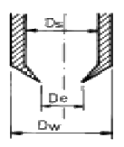
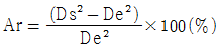
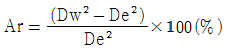
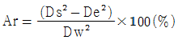
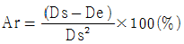
(정답률: 알수없음)
79. 말뚝의 지지력에 관한 다음 설명 중 틀린 것은?
- 말뚝 선단부의 지지력과 말뚝 주면 마찰력의 합이 말뚝의 지지력이 된다.
- 말뚝의 지지력을 추정하는데는 재하시험,동역학적 지지력 공식, 정역학적 지지력 공식 등이 있다.
- 동역학적 지지력 공식은 정적인 지지력을 동적인 관입 저항에서 구하는 공식이다.
- 무리말뚝은 외말뚝보다 각개의 말뚝이 발휘하는 지지력이 크다.
(정답률: 알수없음)
80. 다음 중 테르자기 (Terzaghi) 압밀이론의 가정이 아닌 것은?
- 흙은 균질하다.
- 토립자의 공극은 항상 물로 포화되어 있다.
- 흙의 압축은 3차원적이다.
- 흙속의 물은 1차원적으로 배수되고 Darcy의 법칙이 성립된다.
(정답률: 알수없음)